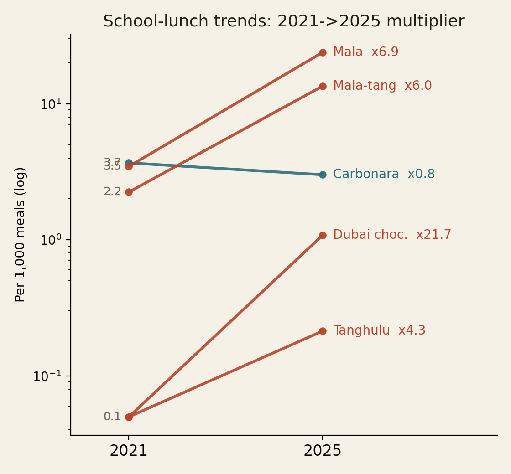
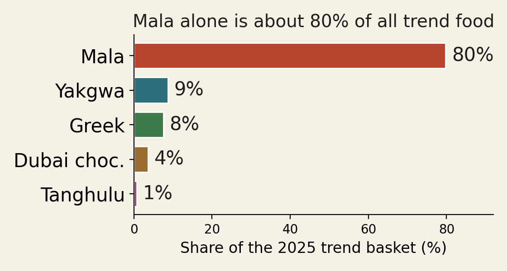
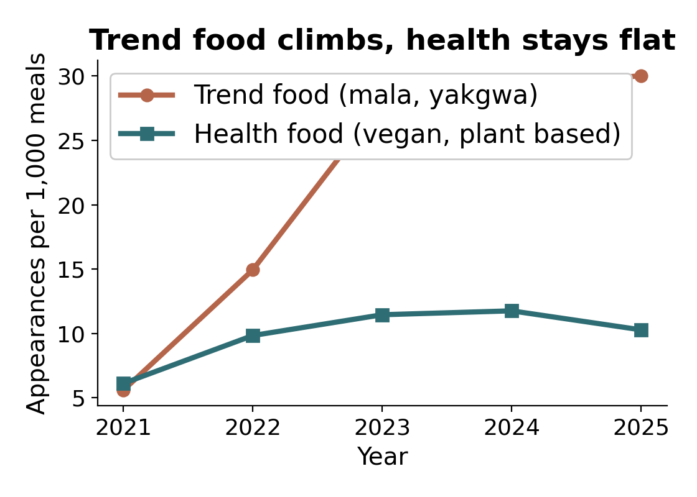
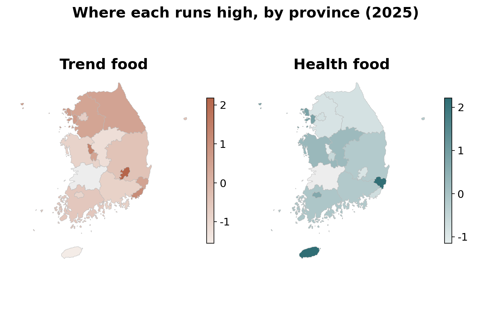
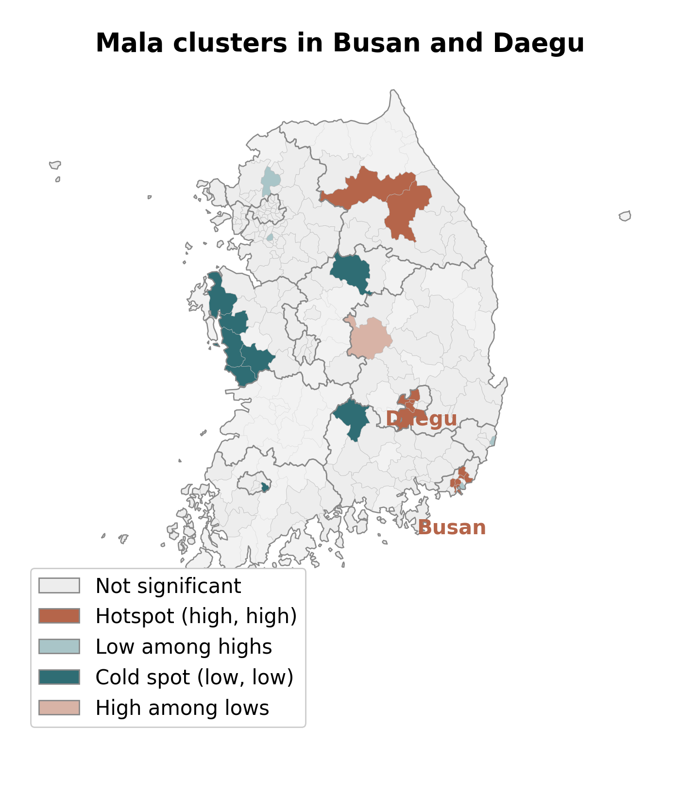

Yes! But only what the form, institution, and space filter allows.
2,355 high schools. ~2.2M lunches. 2021 to 2025. Each menu is counted as appearances per 1,000 meals. Jeonbuk is left out because its data start only in 2024.
FastText word embedding · no hand-picked keywords · one root word finds every spelling
7 trend roots: malatanghuluDubai chocolate yakgwaGreek yogurtdujjonku butter rice cake
8 health roots: veganvegetarianplant based soy meatsoy bulgogigrain bulgogi tofu cutlettofu tender
Finding 1. Form


Mala spread fast because it goes straight onto a tray as mala pork, mala soup, or mala stir fry. Tanghulu and Dubai chocolate were just as popular with students, but they are snacks. There is no way to serve a candied fruit skewer as a school lunch, so they almost never appear.
So popularity is not what puts a food on the tray. What matters is whether it can be cooked as a dish.
Finding 2. Institution


Vegan and plant based dishes are not there because students asked for them. Adults and education offices add them from the top. When students do not like them, they leave them on the tray and food waste goes up. The menu is a contest between what students want and what the system values.
So students do not simply drive the menu. The plan fails in both directions.
Finding 3. Space

Seoul does not lead. Mala clusters in Busan and Daegu. Why there? They are big cities with the densest youth eating-out and delivery scene, where mala spread first, so school kitchens pick it up fastest. It is not the rural spicy-food map.
So the big city does not lead. Trend uptake clusters in particular cities.
School menus are planned a month ahead under strict nutrition rules. They limit sugar and fat, ban high calorie snacks, and lock in ingredients by the 27th of each month. A candied snack cannot pass these rules, but a mala dish can.
Some provinces add their own money for local, eco friendly ingredients. Gyeongbuk adds 1,084 won per meal while Seoul adds nothing, which gives those kitchens more room to experiment. This is only a loose pattern, not a cause, because Busan adds zero won yet is a mala hotspot.
Vegan days began from the top (Gwangju, 2011). Students answered with food waste, so many regions made them optional again. Where schools prepared students first with education and cooking, approval recovered. One Incheon pilot reached 81 percent.
Limitations
The trend basket is about 80 percent mala, so we are really tracking mala adoption. The budget link is a qualitative pattern from 5 of 17 regions, not proof of cause. NEIS data start in 2021, so there is no baseline from before the trends. Full statistics are in the paper.
Data & Methods
NEIS lunch records (2,355 high schools, about 2.2 million lunches, 2021 to 2025; Jeonbuk excluded). Keyword extraction with a FastText embedding. Spatial statistics, Moran's I and LISA at the sigungu (district) scale, computed with PySAL. Budget figures from 5 of 17 education offices.